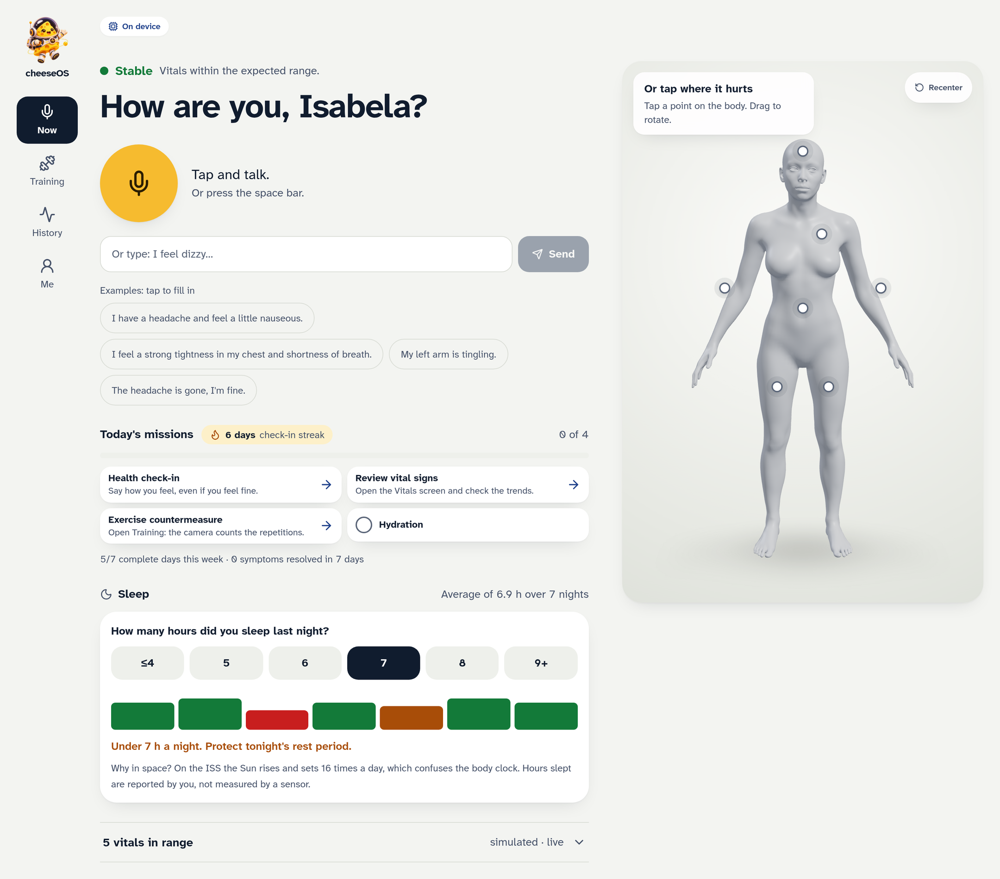
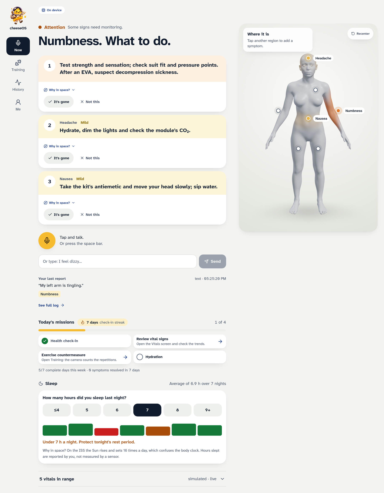
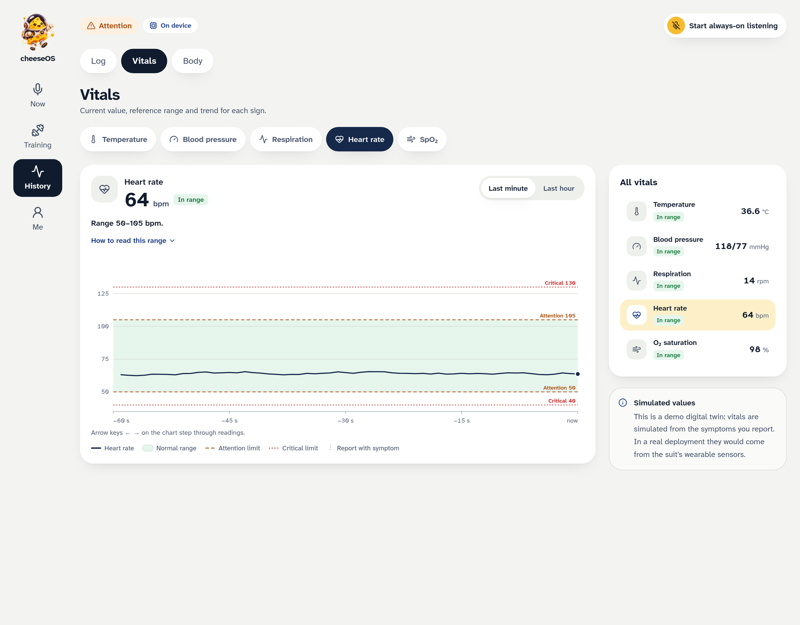
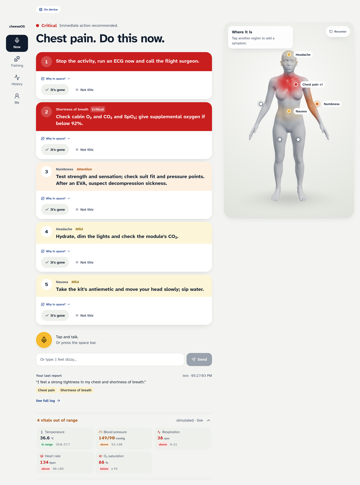
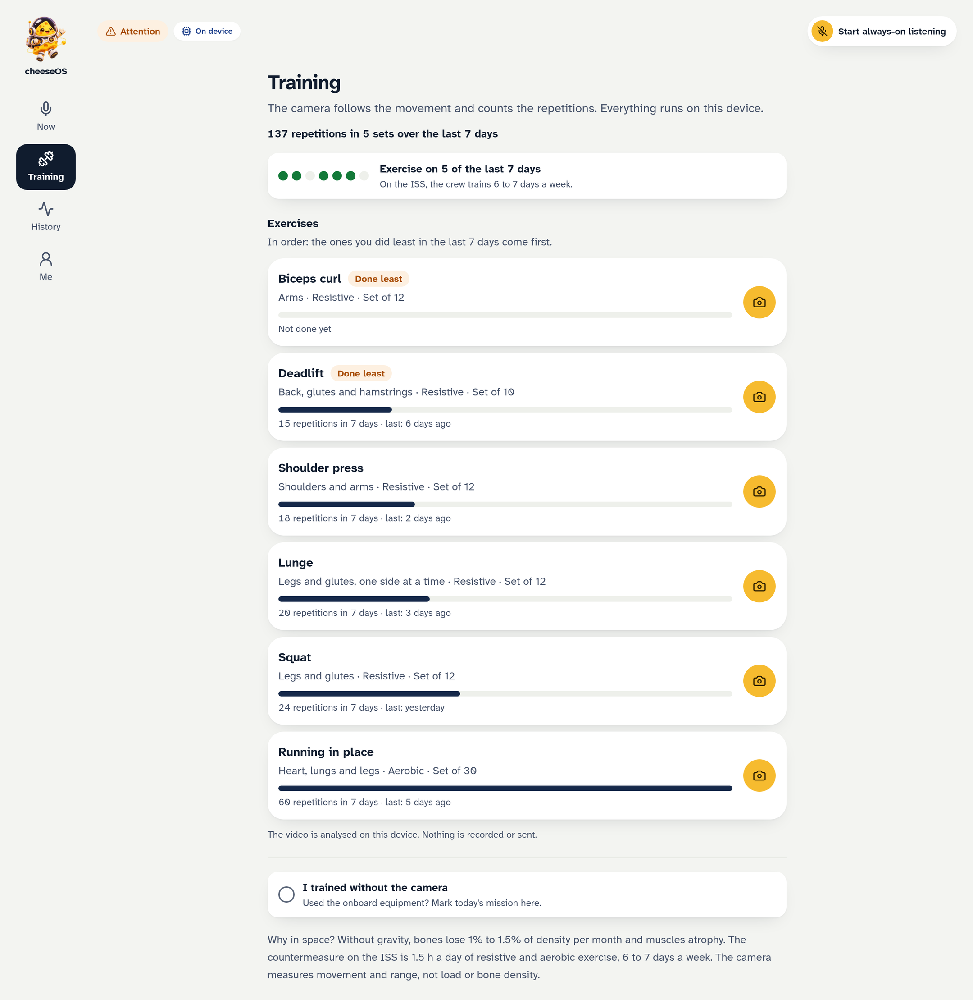
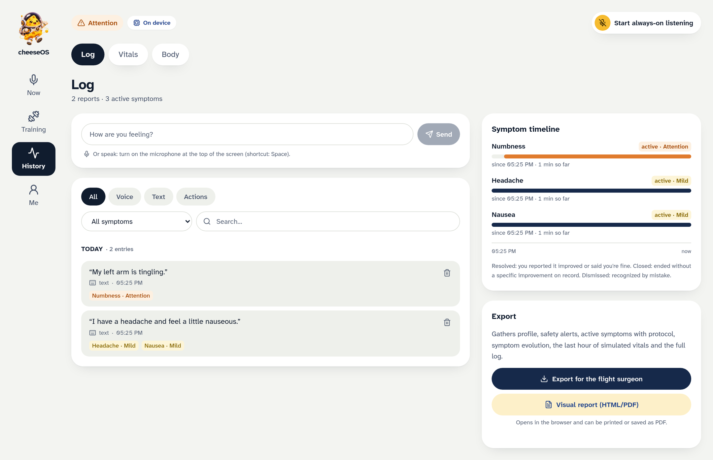
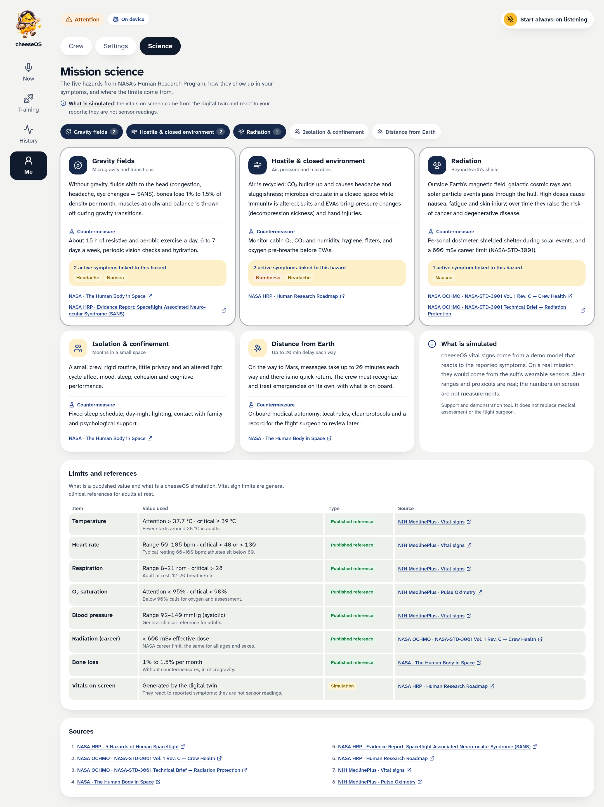

cheeseOS
The health twin that keeps working when Earth goes quiet.
HOW IT WORKS
HOW IT WORKS
cheeseOS







01 · SPEAK
Say or type how you feel.
Speech is transcribed on the device, in English or Portuguese.
02 · SEE
Your 3D twin lights up.
Each symptom is mapped to one of seven body regions and coloured by severity.
03 · ACT
Clear next steps, with no connection.
Recognition, red flags and the onboard protocol are local rules. AI is optional, never required.
04 · COMPARE
Vital signs against reference ranges.
Attention and critical limits come from published NASA and NIH references.
In this demo the readings are simulated and react to what you report.
CRITICAL
Red flags come first.
Chest pain with shortness of breath turns the screen critical: what to do now comes first.
AND MORE
Training
The camera counts repetitions on the device.
Log and report
A full export for the flight surgeon.
Mission science
NASA's five hazards, with sources.
Health that travels
as far as we do.
Local rules first
On-device by default
English and Portuguese
github.com/isabelacode/cheeseOS
Support and demonstration tool. It does not replace medical evaluation. Vital signs shown are simulated.